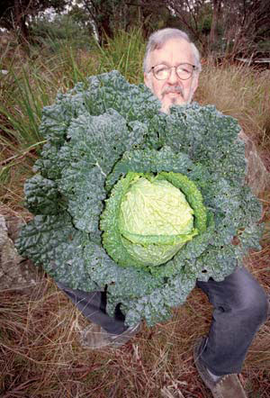

MURIEL BROWN (CHEN)
Steve Solomon, founder of
Territorial Seed Co.
, has gardened extensively in California, Oregon, Canada and Australia, where he now lives. His book,
Gardening When it Counts
, is available at
Mother Earth Shopping
.